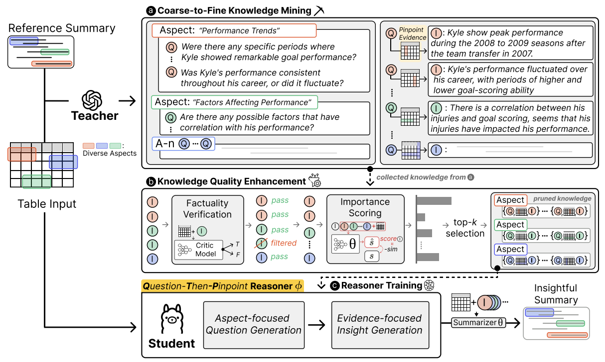

|
|
Kwangwook Seo
I’m a Ph.D. student in the
Data & Language Intelligence (DLI) Lab
at Yonsei University,
advised by Prof.
Dongha Lee.
If you're interested in collaborating on research or exploring new ideas together, please feel free to connect with me anytime! I welcome the opportunity to discuss potential projects and innovative approaches, and I'm always open to hearing from fellow researchers and enthusiasts.
|
üîé Research Interest
My research interests encompass a broad range of topics within the scope of natural language processing (NLP). Recently, I have been particularly interested in:
- Knowledge Augmentation of LMs with external knowledge sources
- Enhancing LM’s internal knowledge activation via curating synthetic post-training data and quality control
- Personalized Agents and User Simulation in diverse real environments
- Reasoning over structured knowledge (e.g., tables, graph, ...) with complex information beyond general text
|
üìö Publications
|
|
MT-RAIG: Novel Benchmark and Evaluation Framework for Retrieval-Augmented Insight Generation over Multiple Tables
{Kwangwook Seo, Donguk Kwon}, Dongha Lee
arXiv, 2025
Paper
/
Code
|
|
|
Stop Playing the Guessing Game! Target-free User Simulation for Evaluating Conversational Recommender Systems
Sunghwan Kim, Tongyoung Kim,
Kwangwook Seo, Jinyoung Yeo, Dongha Lee
arXiv, 2024
Paper
/ Code
|
|

|
Unveiling Implicit Table Knowledge with Question-Then-Pinpoint Reasoner for Insightful Table Summarization
Kwangwook Seo, Jinyoung Yeo, Dongha Lee
EMNLP Findings, 2024
Paper
/
Code
/
Presentation
/
Poster
|
|
|
VerifiNER: Verification-augmented NER via Knowledge-grounded Reasoning with Large Language Models
{Seoyeon Kim, Kwangwook Seo}, Hyungjoo Chae, Jinyoung Yeo Dongha Lee
ACL, 2024
Paper
/
Code
/
Presentation
/
Poster
|
üèÜ Honors and Awards
- 1st Prize – Bigcontest 2022 Data Analysis Champion League, MSIT and NIA
Minister of Science and ICT Award
Optimal Location Selection of EV Slow Charger
Presentation
/
Blog Post
- 3rd Prize – 2022 HUFS AI Idea Contetst , HUFS AIEI
Development of SDGs Implementation Analysis System at Universities based on NLP
- 1st Prize – 2022 HUFS 19th Spring Academic Conference, HUFS
Regression Analysis on Brazilian Equity Index and Macroeconomic Influencing Factors
- 2nd Prize – 2021 HUFS 18th Fall Academic Conference, HUFS
Financial Ratio Analysis on Brazilian Travel Agencies Before and After COVID-19
|
üìÅ Work Experience
- AI Research Intern, Twigfarm
Sol Project 3rd Internship Program, 2022
Korean STS benchmark improvement via scoring silver-label inconsistency
|
üìñ Teaching
- [AI Expert] Information Retrieval and Recommender Systems (2024), Samsung Electronics SNU R&D Center
Teaching Assistant, Project Mentorship
- [AAI3120,CAS3120] Machine Learning (2024S, 2025S), Yonsei University
Teaching Assistant
- [AIC2110] Introduction to Data Science (2024S), Yonsei University
Teaching Assistant
|
|
{kind=link}